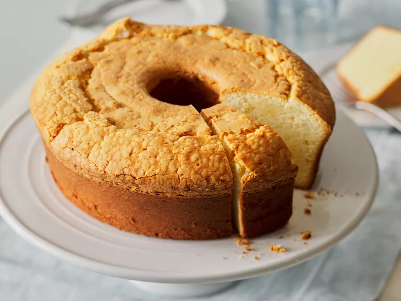

Home
Cheese Cake

Description
Cheesecake is a creamy, smooth dessert made with a rich filling of cream cheese, sugar, and eggs, typically set on a graham cracker crust. It’s often topped with fruit, chocolate, or a sour cream layer.
ingredients
- Graham cracker crumbs
- Butter
- Cream cheese
- Sugar
- Eggs
- Vanilla extract
- Sour cream (optional)
Steps
- Preheat oven to 325°F (163°C). Mix graham cracker crumbs with melted butter and press into a pan to form the crust.
- Beat cream cheese, sugar, eggs, and vanilla until smooth. Pour over crust and bake for 50-60 minutes.
- Let cool, then refrigerate for at least 4 hours or overnight. Optionally, top with sour cream or fruit.